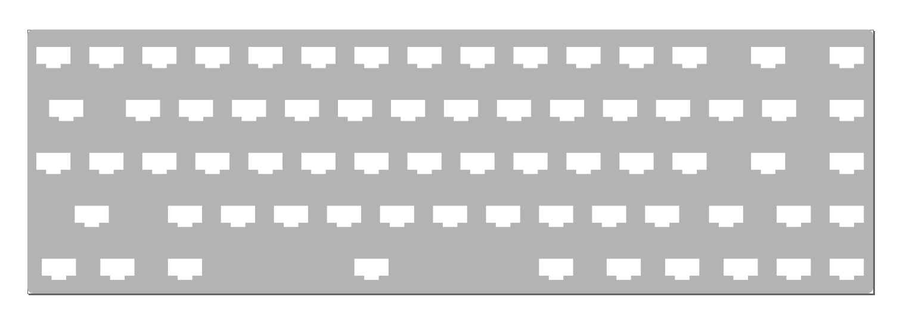

Mechanical Construction¶
Published on 2019-10-06 in Flounder Keyboard.
This time I want it to be just a PCB with the low-profile Kailh cholocate switches held just by the soldering. Those switches are sunken into the PCB, so I will need to have cutouts, the footprint looks like this:
The top two holes are only for mechanical attachment, the bottom two are the actual switch. Since I plan to design the part in Fritzing, and Fritzing parts can’t have cutouts as a part of them, I will just put this on the silkscreen, then export that to SVG, and create a board outline with all the cutouts as a custom board shape:

A SAMD21 microcontroller and a USB socket will be squeezed somewhere between the keys. I also have stabilizers for the long keys ordered, but I will handle those when they arrive, so I can actually test them. I will probably need to mak custom push-rods for them, from paper clips.